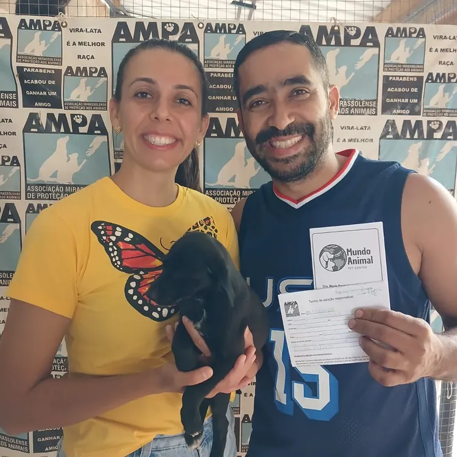
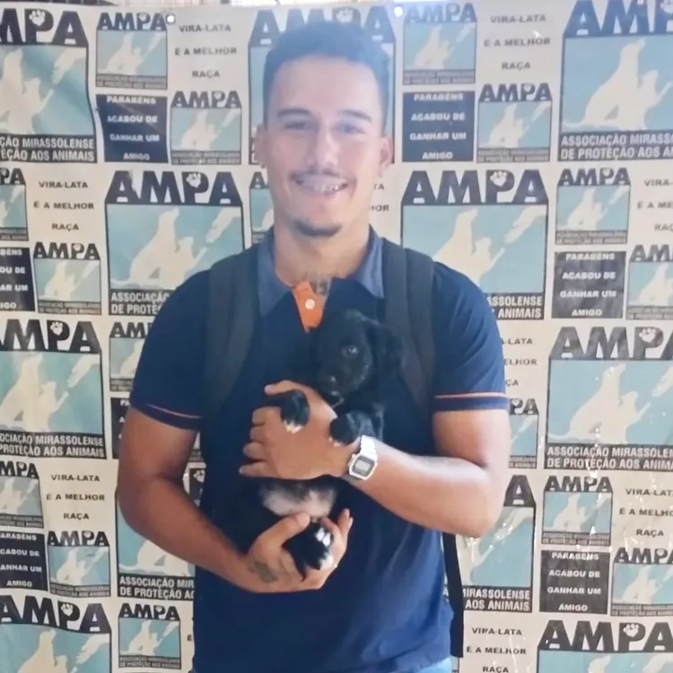
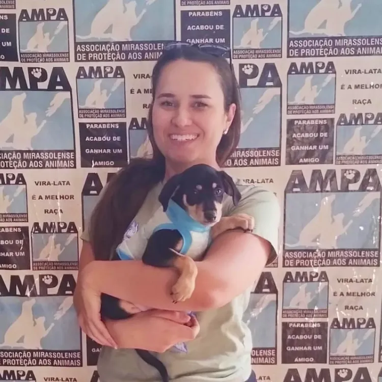
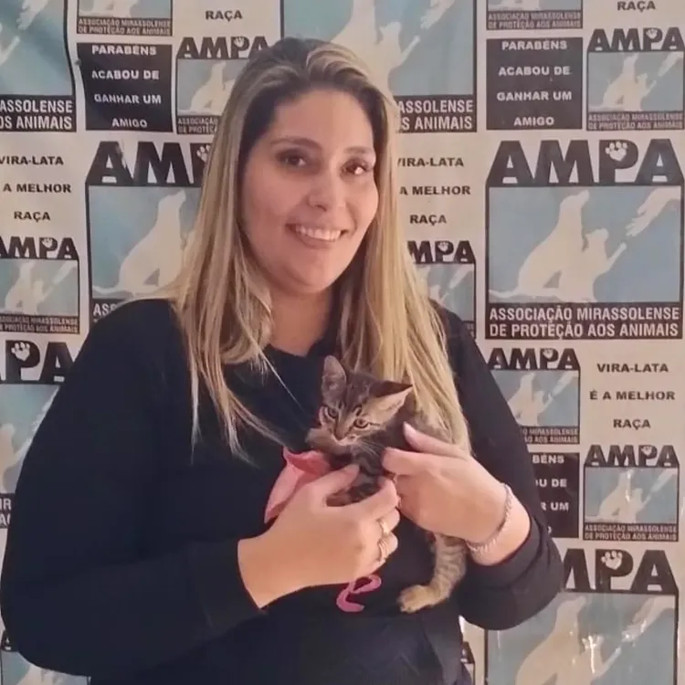
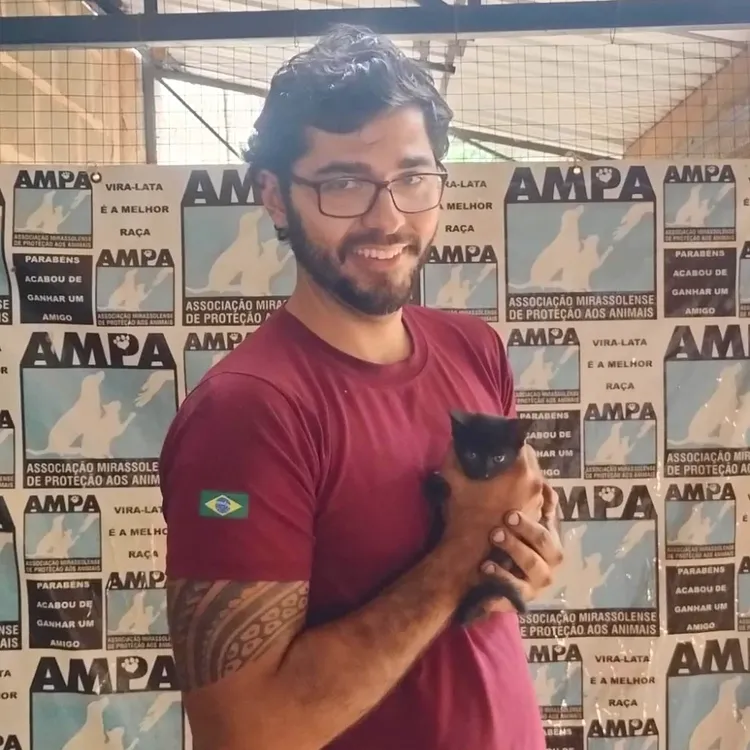
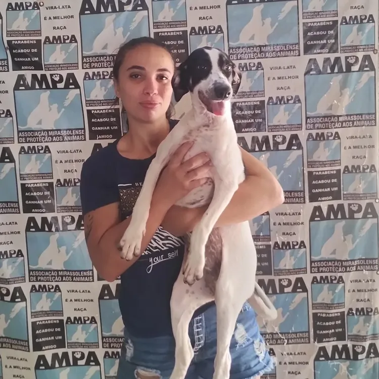
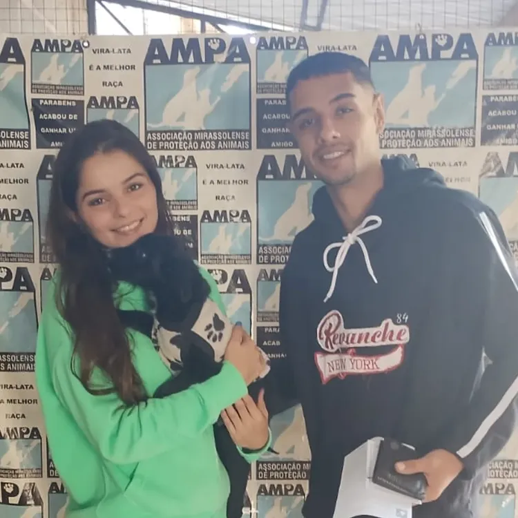
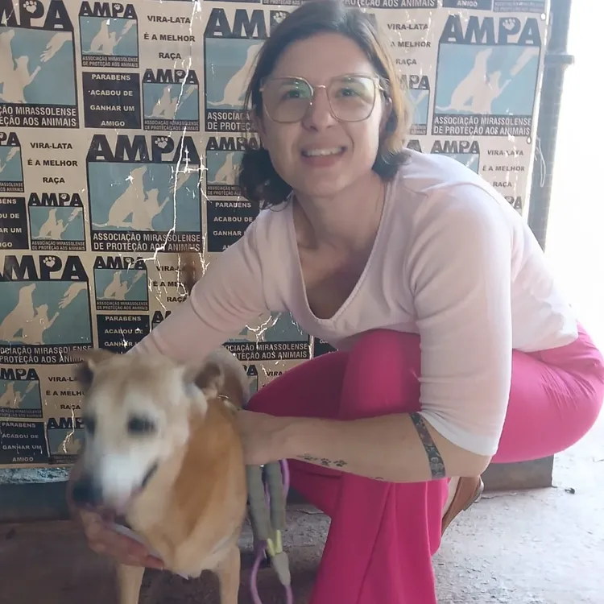

Resgate e Acolhimento
Retiramos animais de situações de risco, oferecendo um abrigo seguro, alimento e muito carinho até que estejam prontos para adoção.
Nossa missão é acolher, tratar e encontrar lares amorosos para animais em situação de rua ou maus-tratos. Faça parte dessa mudança.
Conheça nosso espaço
A AMPA (Associação Mirassolense de Proteção aos Animais) atua incansavelmente para transformar a realidade de cães e gatos abandonados. Nossa dedicação é movida pelo amor e pelo respeito à vida.
Retiramos animais de situações de risco, oferecendo um abrigo seguro, alimento e muito carinho até que estejam prontos para adoção.
Garantimos atendimento veterinário, vacinação e castração, pilares essenciais para o bem-estar animal e o controle populacional.
Buscamos tutores responsáveis e amorosos. Realizamos entrevistas para garantir o 'match' perfeito entre a família e o animal.
Conheça algumas das histórias de adoção que aquecem nossos corações. Cada imagem representa uma vida transformada e um novo recomeço cheio de amor.








Qualquer valor ajuda a custear ração e veterinário. Contribua com a nossa chave PIX (CNPJ):
Doe ração, medicamentos ou cobertores nos nossos pontos de arrecadação espalhados por Mirassol.
Não pode adotar? Apadrinhe um de nossos animais e ajude a cobrir seus custos mensais com alimentação e cuidados.
Estrada Municipal Mss, 142 - Zona Rural - Lot. Res. Moreira e Guimaraes, Mirassol - SP, 15130-000
Segunda a Sexta: 13h às 16h
Sábado: 9h às 12h